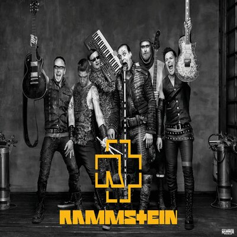

Rammstein (нем.; немецкое произношение: [ˈʁamʃtaɪn]) — немецкая метал-группа, образованная в январе 1994 года в Берлине. Музыкальный стиль группы относится к жанру индастриал-метала (конкретно — его немецкой сцене Neue Deutsche Härte). Основные черты творчества группы: специфический ритм, в котором выдержана большая часть композиций, и эпатирующие тексты песен. Особую известность группе принесли сценические выступления, часто сопровождаемые использованием пиротехники, получившие признание в музыкальной среде. Состав группы ни разу не менялся.
По состоянию на 2018 год группа продала около 20 млн копий альбомов.